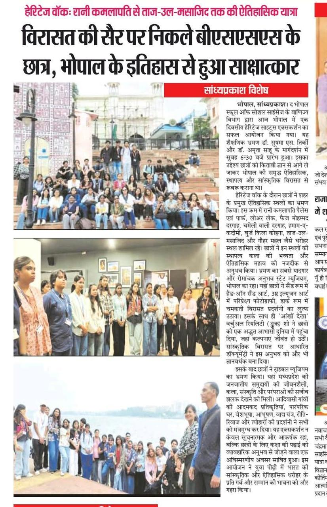

Heritage Walk — A historic journey from Rani Kamlapati to Taj-ul-Masajid
BSSS students set out on a heritage trail, come face-to-face with Bhopal’s history
Sandhya Prakash Special | Bhopal

BSSS students across the day’s heritage trail — at the city’s monuments, inside the museum galleries, and along the lake.
Bhopal: The Department of Commerce at Bhopal School of
Social Sciences successfully organized a one-day Heritage Sites Excursion in Bhopal today. The
educational trip began at 6:30 AM under the guidance of Dr. Sushma S.
Tirkey and Dr. Amrita Sahu.
The objective was to take students beyond bookish knowledge and familiarize them closely with
Bhopal’s rich historical, architectural, and cultural heritage.
During the heritage walk, students toured the city’s major historical sites — experiencing up
close the architectural grandeur and historical significance of each.
On the trail
Rani Kamlapati Palace and Park
Lower Lake
Faiz Mohammad Dargah
Chameli Wali Dargah
Hamam-e-Qadeemi
Burj Kila Kohna
Taj-ul-Masajid
Gohar Mahal
…among other heritage locations across the city.
The most memorable stop: the State Museum
The most memorable and exciting part of the trip was the visit to the State Museum, Bhopal. There, students enjoyed:
Hands-on sand
art in the Sand Room
Perspective
photography in the 3D Illusion Art section
A dazzling heritage
display in the Dark Room
A documentary based
on cultural heritage
The “Aankhon Dekha” Virtual Reality Show
…opened students’ eyes to an incredible virtual world where imagination came alive.
A vivid glimpse at the Tribal Museum
Students went on to the Tribal Museum, where they saw the lifestyle, art, culture and traditions of Madhya Pradesh’s tribal communities:
Replicas of tribal village
life and traditional houses
Traditional attire and ornaments
Musical instruments
Customs, rituals and
festivals
The displays left everyone captivated.
The event was not only informative and engaging but also proved to be a memorable and practical learning experience for students, connecting classroom study with real-world exposure.
This initiative further deepened a sense of pride and respect among the younger generation for India’s cultural and historical heritage.
Off at 6:30 AM
A one-day excursion guided by Dr. Sushma S. Tirkey and Dr. Amrita Sahu.
Eight Landmarks
From Rani Kamlapati Palace to Taj-ul-Masajid and Gohar Mahal.
Aankhon Dekha VR
A virtual world at the State Museum where imagination came alive.
Tribal Traditions
Village replicas, attire, instruments, rituals and festivals.
Source: Sandhya Prakash Special, Bhopal. Excursion organized by the Department of Commerce, Bhopal School of Social Sciences.